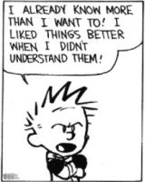

Bird got to fly;
Man got to sit and wonder ‘Why why why?’
Tiger got to sleep,
Bird got to land;
Man got to tell himself he understand.”
--Kurt Vonnegut
Oh elusive enlightenment.
If there’s any desire for that exalted state, the demand to understand and get it is strong.
We want AHA!s and realizations and explanations and “Oh I see!”s. We want to know why. We want things to make sense.
Enter The Witness, Being Aware of Awareness, Going Inward, Big Self, Little Self, The Path, The Gate. Enter satsangs and gurus and unending questions and requests for explanations from said gurus.
Understanding will be ours. Whoo hooo!
Although… what exactly does this understanding? What transcends the self’s usual focus on me-me-me in order to comprehend, see through, and be aware of…
Itself?
I mean, it’s certainly not the self. That would make understanding dependent on a very unreliable source.
Especially since trying to transcend, trying get outside of the mind in order to comprehend the mind, would thus be using that very same mind to do it.
Which is a brilliantly looping rigged system.
After all, even the word “realized” contains the word “real.” The word makes real, a being, a subject, which realizes and is aware of awareness.
Which makes awareness of awareness a subjective experience. A subject, The Me, is aware of itself and therefore separate from the thing (Me) it is aware of.
So we say we want comprehension of no-self and no separation and not-two, and we want to get outside ourselves to see our selves, and yet still…
Getting-Outside starts from the Right-Here.
Which isn’t outside.
Nothing can get outside itself.
Making Awareness as we understand it, actually just more us. The Witness is just more us.
Regardless of how spacious and big it "feels like."
Understanding reifies the self.
Perhaps you can see the flaw in this approach.
Luckily though, no matter what we think or feel like,
Consciousness is not in little ol’ us. We are in it.
We are OF it.
Making us It, itself.
The Divine, the vast, the incomprehensible.
We are that.
Which means, while we happily explain what awareness is and how it works and how we can “access” it,
We are everything, every experience. Already.
Look at us, Being it.
We are joy and beauty and anger and tears and laughter and color and music and triggers and pain and addictions.
Because what is awareness, consciousness, the Divine, if not Everything?
Whether understood by humans or not.
And leaving no one, no Me, no locatable point of view, to understand.
So it may be a relief to know that we never will. We’ll never comprehend.
Whether we're certain we do or not.
And despite all those fist-shaking assurances on social media.
Human understanding is not possible.
Though sure, we can keep trying. Why not?
After all, understanding is IN it too. IS it too.
Though yes, grasping does get in the way of what we claim to want.
Still, we are that too.
So feel free to carry on trying to figure it all out…
And being aware…
Of being aware…
Of being aware…
Of being aw...
Aha! That’s it!
Ahhh.
Got it.
every week.
"You are asking, "Who am I?" and you are not going to get an answer, because the one who will get the answer is false. You may have an idea, a concept, and you will think you have found yourself, but it is only a concept;
you can never see your Self." -- Nisargadatta
"There was a young man who said, “Though
It seems that I know that I know,
What I WOULD like to see
Is the ‘I’ that knows ‘me’
When I KNOW that I know that I know.”
--Alan Watts

Image caption